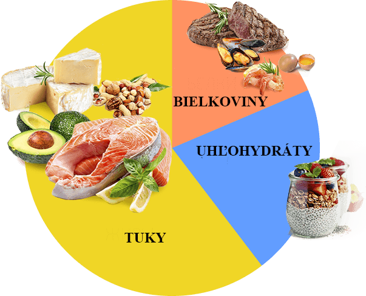

«Vždy som bola na diéte. Problémy s hladom, spánkom a kožou boli mojimi stálymi spoločníkmi. Na váhe bolo mínus, ale potom zas som sa začala prejedať a tak neustále dookola. O KETO DIET som sa dozvedela od odborníka na výživu. Výsledok chudnutia ma potešil takmer okamžite. Každý týždeň som videla na váhach mínus 3 kg. Pre mňa to bola skutočná mágia. Moja kondícia bola skvelá, netrpela som hladom a spala som 7 hodín».
Zuzana, 27 rokov

«Pre mňa sa KETO DIET stala záchranou. Nikdy som si nemyslela, že môžem jesť všetko, čo milujem a zároveň chudnúť. Faktom je, že som mala v strave vždy nadbytok uhľohydrátov. To malo za následok nadváhu 100 kg. Všeobecne, hneď ako som mierne upravil množstvo uhľohydrátov, hmotnosť začala klesať. Ale nemôžem žiť bez uhľohydrátov, pretože mám veľmi rada rýchle občerstvenie. Potom som sa dozvedel o KETO DIET. Po užívaní tohto lieku proces horenia prebytku prešiel oveľa rýchlejšie a ja som sa ani nemusela vzdať uhľohydrátov. Celkovo som za 4 mesiace schudla 25 kg. KETO DIET je jednoducho super! Odporúčam ho každému!»
Monika, 49 rokov

«Ako málo vieme o našom tele. Nemyslela som ani na to, aké zložité procesy v ňom prebiehajú, až kým som sa nedostala k výžive a nepočula o ketóze. Som lenivý človek, neviem sedieť na diétach, ani športovať. Preto som hľadala niečo ľahké a rýchle. O KETO DIET môžem povedať jednu vec a to, že ju musíte vyskúšať! S ňou som schudla 15 kg a dosiahla tak svoju ideálnu postavu.»
Jarmila, 34 rokov